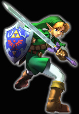

Welcome to my webpage! Since I have graduated and this site is no longer school-run,I have decided to make it a bit more personal and am going to revamp the whole thing, slowly of course.
Now let's get to the links, yes?

Maynard Solliday
bio page.
Blogging
Some Norris trauma.
School related projects
Ethan's Site
The Truth of the Squirrels and Raccoons
Poems
Writings
Stories
The Rants of Insanity
Other Links!!
The Ultimate Showdown
Ask A Ninja!
Brolly Clip (Spark notes for Brolly)If you don't know who Brolly is, you better learn fast.
My myspace
Rather Good
VG Cats
Penny Arcade
8-bit Theatre
AFW!!!(Anime Festival Wichita!)
Potter Puppet PALS!!!